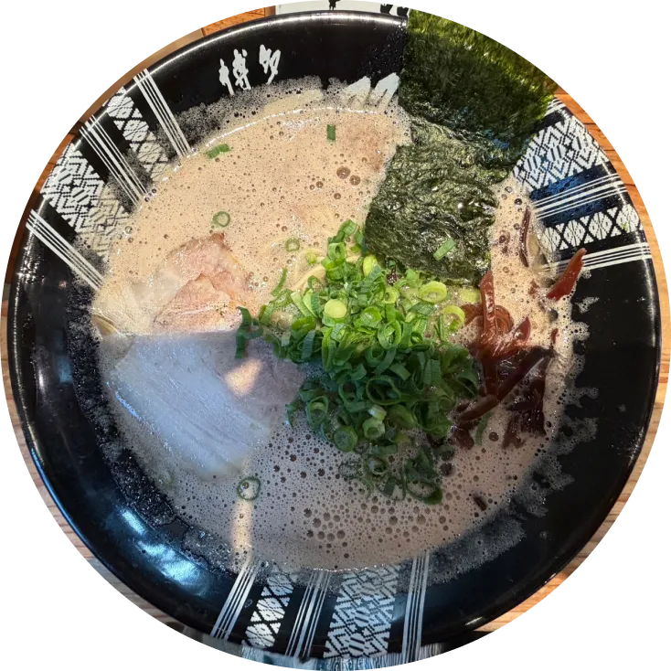
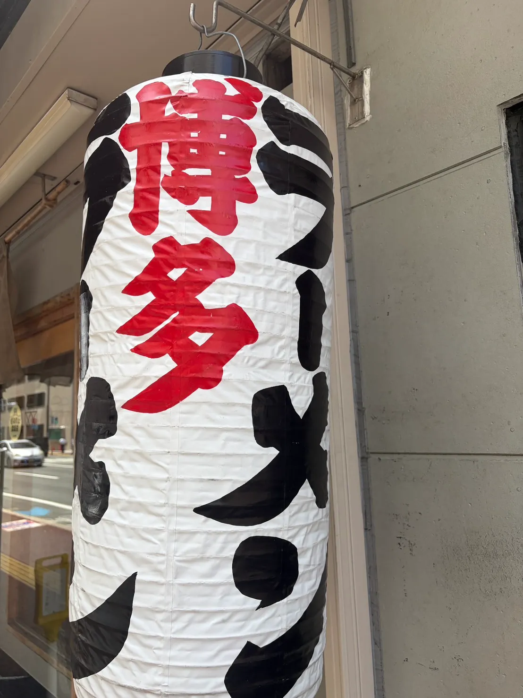

一双
濃厚なスープが麺と絡む
替え玉をしないと後悔する。
極細麺との絡みが異常なほど完成されている。
白濁したスープは雑味がなく、
博多駅から徒歩圏内にある、行列が絶えない一軒。
基本情報
福岡市博多区店屋町7-28
11:00〜翌2:00
不定休
¥800〜¥1,000

最強の食べ方
- 一ラーメン＋替え玉＋辛子高菜が一双の正解。
- 二最初の一口はスープだけ飲む。
- 三中盤で辛子高菜を投入して味変。
- 四替え玉は「ハリガネ」で頼むのが一双流。
おすすめ時間帯
平日 ─ 実際に並んで計った
11時
並ばず入れる
12時
30分待ち
14時
10分待ち
週末夜は避けるべし。
知っておくと得する情報
四つの心得
一
券売機は並んでいる間に
確認するとスムーズ。
二
カウンター席のみ。一人でも入りやすい。
三
スープが濃いめなので水は多めに。
四
替え玉はスープが残るうちに頼むこと。